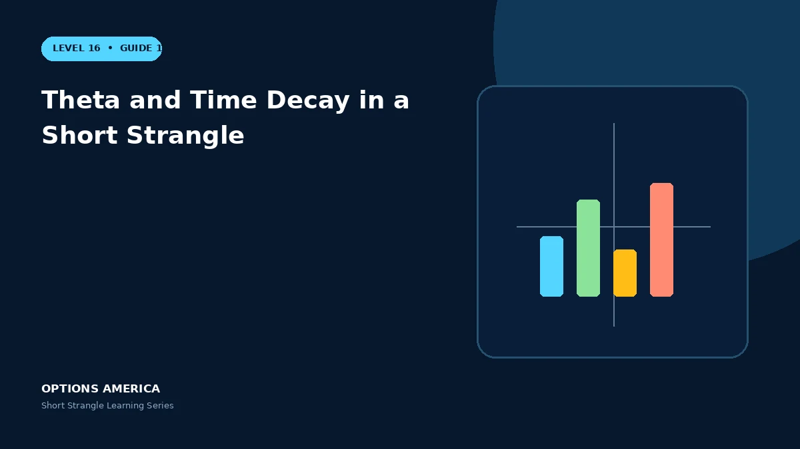

Understand how OTM time value decays and why the tested side can overwhelm positive theta near expiration.
Two decay sources
Both the OTM call and put can lose extrinsic value as time passes. The rate depends on distance from spot, IV and remaining time.
Tested option
When price approaches one strike, that option gains delta and may gain IV. Its increase can exceed the decay collected from the distant untested option.
Gamma near expiry
Shorter DTE concentrates theta but also negative gamma. A small late move can change an apparently safe position into a rapid loss.
Close the cheap tail
The final dollars of premium may offer poor reward relative to assignment, gap and execution risk. Evaluate remaining credit instead of holding mechanically.
A practical example
The untested call loses $12 while the tested put gains $90 during a selloff. Positive portfolio theta does not prevent the net position from losing $78.
This simplified scenario focuses on selected outcomes; live prices and risks will differ. Live option prices also reflect the underlying price, time decay, rates, dividends, liquidity and transaction costs. Greeks are theoretical estimates, not guarantees.
Build a risk-first trading plan
Before using theta and time decay in a short strangle, record the stock price, put and call strikes, expiration, total credit and contract multiplier. Calculate both breakevens, then estimate dollar loss beyond them under upside and downside gaps. A wide strike range improves the starting room but does not define either tail.
Stress several prices, time points and volatility levels, including a skew change that affects the put and call differently. Review delta, gamma, theta, vega and buying power for the complete portfolio. Multiple OTM positions can become tested together during a common market shock.
Define a profit target, maximum tolerated loss, tested-side trigger, margin reserve and latest exit date before entry. Decide whether an event is intentionally included and how assignment would be handled. Use multi-leg orders and confirm quantities after every fill, roll or partial close.
Document the result after exit, including slippage, assignment effects and the largest intraday exposure. Comparing the original forecast with the actual path helps distinguish a sound process from a lucky outcome and improves later strike, duration, margin-reserve and position-size choices under similar market conditions.
Frequently asked questions
Do both legs decay equally?
No.
Can the tested leg rise despite time passing?
Yes.
Why close before expiry?
To reduce gamma and assignment uncertainty.
Continue the Short Strangle cluster
Explore related guides: Short Strangle Expiration and DTE Selection · Short Strangle Options Strategy: 12 Mistakes to Avoid · How to Choose Short Strangle Strikes. For a structured sequence, use the free Level 16 – Short Strangle course.
Options involve risk and are not suitable for every investor. This material is educational and is not investment, tax or legal advice. Greeks are theoretical estimates, and contract terms and broker requirements can vary.